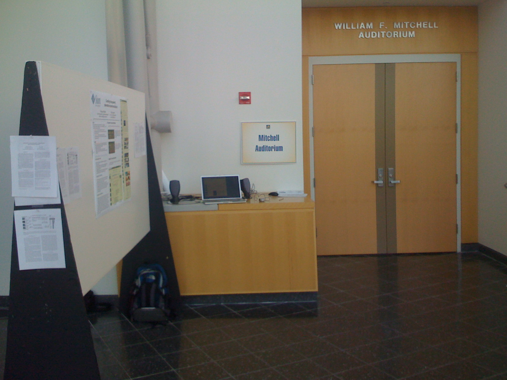

The Music Explaura Demo
During the late-breaking/demo session Frank and I demonstrated the
Music Explaura - a web application that gives explainable and steerable
recommendations. Despite what I said in my previous post,
we actually had a great location, right next to the main auditorium -
with lots of traffic. We spent the entire demo time giving non-stop
demos, from two separate laptops. We had a 2-page white paper handout
describing the system. We received lots of great feedback - people
really seemed to like the idea and were hoping to see us release our web
app so that they could play with it.
Here's a photo of our demo location - right next to the big room. Lots of space, lots of light, nice and visible. Youngmoo loaned us a pair of desktop speakers too, so you could hear the music.

Here's Frank giving a demo to Charlie Inskip - Charlie's smiling so that's a good thing - since Charlie knows a whole lot about music.
Here's our poster - click on it for the PDF

After every demo, Frank would ask for a hug.